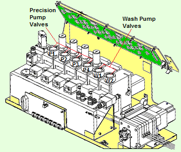
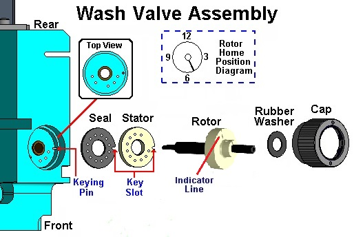

This procedure describes how to troubleshoot and maintain the ceramic precision and wash valves in the DxI instrument.
Use this procedure to troubleshoot and maintain the ceramic precision and wash valves in the DxI instrument when:
- Precision or wash valve errors occur.
- Performing preventative maintenance.
- Installing a new instrument.
Locations of the Pump Valves:
Wash Buffer Upper Reservoir

Note: DxI 600 has only two Precision Pumps/Valves.
These cautions apply to the DxI precision and wash valves and components:

-
Disassemble the valve.
-
Home the valve.
-
Place a lint-free towel under each dispense probe, aspirate probe 1, and the reagent pipettors to catch the buffer fluid that drains out when the valve is opened.
-
Remove the valve cap.
-
Remove the black rubber washer that fits between the cap and rotor.
Note: The washer can adhere to the cap when the cap is removed.
-
Remove the ceramic rotor from the valve housing.
Note: If the rotor is difficult to remove, push the side of the shaft to loosen it.
-
If the ceramic stator comes out of the valve housing when the rotor is removed, separate the rotor and stator.
-
If the stator remained in the valve housing when the rotor was removed, then remove the stator from the housing.
Note: If the stator is difficult to remove, insert the end of the rotor shaft into the center hole and carefully pry sideways and up. To avoid chipping the stator and making it unusable, confirm that the shaft is well into the stator before prying the stator loose.
-
Remove the black rubber seal from inside the valve housing.
-
Clean the valve.
-
Soak all of the removed parts in distilled water, and wipe the parts with a lint-free towel to clean them.
-
Clean the valve housing with distilled water and a lint-free towel.
-
Inspect the valve and valve parts.
-
Inspect all of the parts that were cleaned, and replace any parts that are damaged, worn, or defective.
-
Inspect the bearing located inside the cap, and replace the cap assembly if it is rusted or damaged.
Note: The valve cap is not part of the valve service kit.
-
Assemble the valve.
-
Confirm that the valve parts and the valve cavities in the housing are clean before reassembling the components.
Caution: Lint or debris interferes with the seal.
-
Install the seal into the housing so that the slot in the seal aligns with the alignment pin and the holes match to the holes in the housing.
-
Install the ceramic valve stator into the housing so that the slot in the stator aligns with the alignment pin and the holes match to the holes in the housing.
-
Install the rotor so that at home the black line on the precision valve rotor faces left (8:00 o'clock position) or the black line on the wash valve rotor faces forward (5:00 o'clock position).
-
Install the black rubber washer on top of the valve rotor.
-
Install the valve cap over the valve parts, rotating clockwise until tight.
Note: Do not overtighten the valve cap.
-
Verify that the valves are assembled correctly and that the system meets specifications.
-
Home each valve several times. Confirm that each valve moves and that the black line on the rotor points in the correct direction when at home (Precision: 8:00 o'clock, Wash: 5:00 o'clock).
-
Prime the reagent pipettors, aspirate probes, and dispense probes.
-
Confirm that all of the air is removed from the reagent pumps, wash pumps, fluidics tubing, and probes.
Note:
- Installing a rotor, a seal, or a stator in an incorrect orientation can produce a pump error during priming because the misalignment blocks the fluid ports.
- Any small air leak caused by debris or a poor seal can cause a failure to prime. Often reassembly of the valve components corrects the problem.
-
Verify system operation.
-
Perform system verification as stated in the Verification of Service Repair document .
-
Remove all the bypassed cover interlock switches and close all the instrument covers.